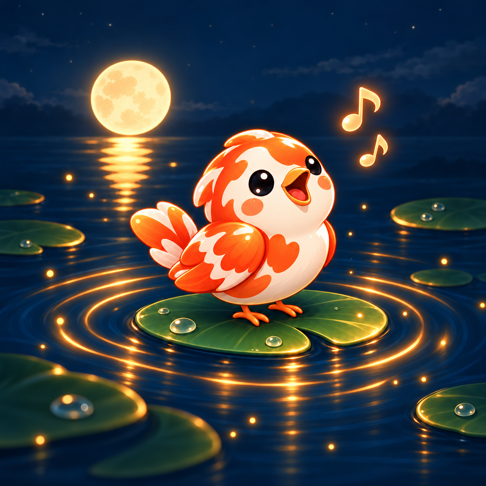

Your voice, in your words.
Pair with your server to begin.
Your token is saved in your system credential store.
Save to choose a shortcut in your desktop’s dialog. Ctrl+Alt+Space is suggested. Single-key holds depend on your desktop’s support.
The default key follows your keyboard layout. AltGr layouts use Right Ctrl. Press the key alone; chords cancel dictation.